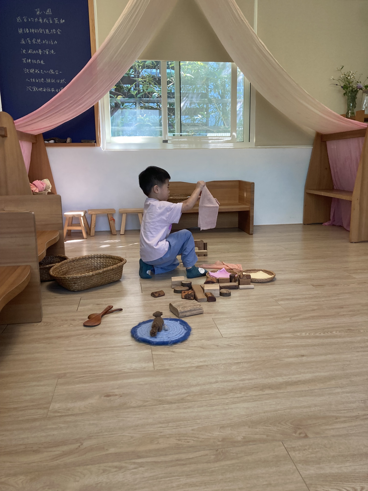
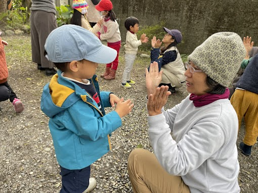
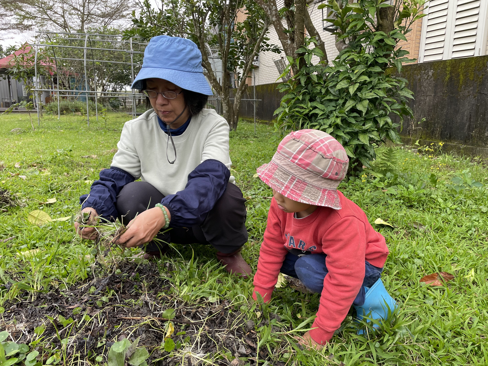
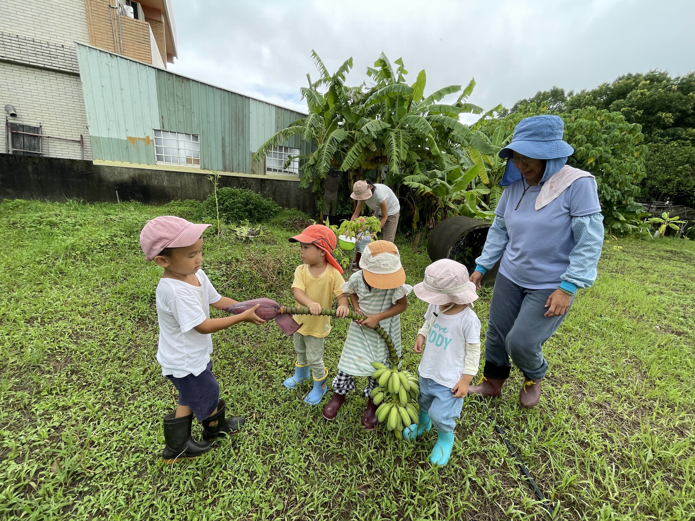
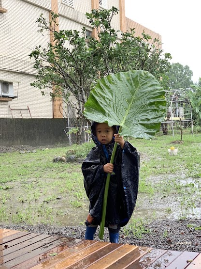
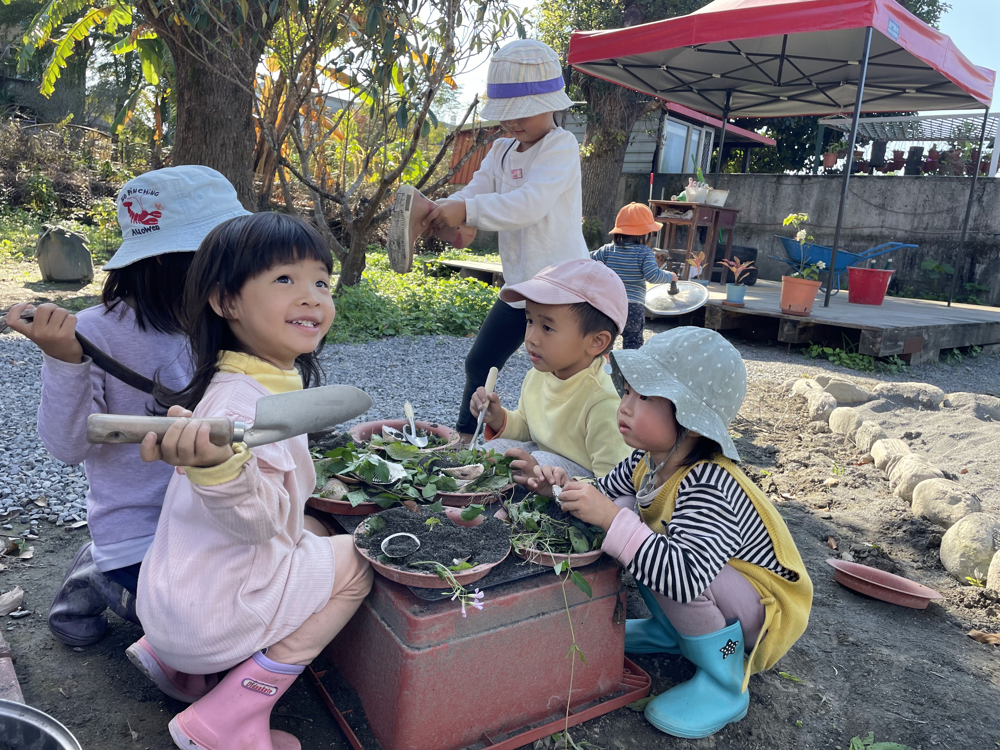
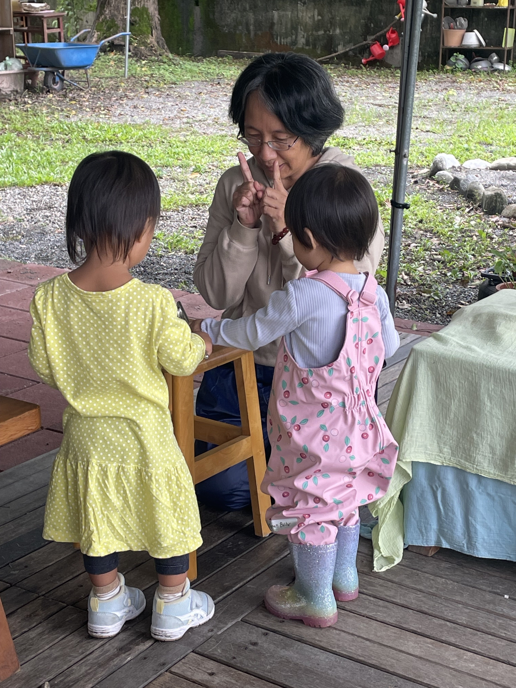

在安農溪畔，感受自然與慢生活的節奏
親子幼幼班是從教室內的自由遊戲、歌謠，到戶外的照顧菜園、觀察植物，孩子開心地在百香果棚下穿過來穿過去，漸漸熟悉慢生活裡的節奏及自然元素的滋潤；而大人也慢慢地可以在一旁做手工並關照、陪伴遊戲中的孩子。
秋季，我們會帶小小孩栽種植物，也有大人的簡單手工；我們也會邀請護理師來分享寶寶按摩，讓父母能夠將這些帶回家，在家跟孩子一起工作。
招生資訊
⭐ 招生對象
1歲半～3歲幼兒及家長
（小班溫馨共學，僅收 5 組家庭）
⭐ 時間與時段
每週一
上午 09:00 ～ 10:30
⭐ 共學地點
五芒星星親子共學園
宜蘭縣三星鄉安農九路 560 號
🌿 幼幼班家庭獨享禮遇與備品提醒
🎁 協會會員專屬優惠
參與五芒星星親子共學幼幼班之家庭，凡報名參與本協會辦理之各項課程與工作坊，皆享有專屬優惠；各項節慶活動可免費參加。
🍎 點心與茶飲準備
請為孩子自備水果點心；園區現場亦會貼心準備當令香草花草茶，供大家溫暖享用。
陪伴團隊 ( Faculty )
用溫暖與專業，陪伴家長與孩子踏實走過成長之路
丁旋 老師
「喜歡演偶戲，喜歡自然，喜歡散步，喜歡園藝。」
專業背景與經歷：
- 多年華德福幼兒園及共學主帶經驗
- 宜蘭慈心華德福幼兒園 14 年教學經驗
- 三年制台灣人智學生命史研修
- 五年 IPMT 國際學士後人智醫學研習
- 三年慈心華德福師訓
✨ 共同備課教師群
陳曉霓 老師
社團法人台灣華德福親子共學協會理事長
- Extra Lesson 支持教育輔正教育老師
- 宜蘭慈心華德福幼兒園六年主帶經驗
- 美國 Golden Valley 華德福戶外幼兒園實習
張荷月 藝術老師
資深藝術工作者 / 五芒星星藝術老師
- 社團法人台灣華德福親子共學協會常務理事
- 若為自由有限公司藝術總監
- IPMT 五年學程 / 台灣人智學藝術治療課程修業中
生活點滴 ( Gallery )
在自然與四季更迭中，記錄孩子專注探索、喜悅與溫暖陪伴的瞬間

室內專注的自由遊戲時間'">室內專注的自由遊戲時間
在溫暖沉靜的空間裡，孩子用天然木塊與布料自由創造與探索。

晨圈互動與眼神對視'">晨圈互動與眼神對視
透過簡單的手部律動與眼神交會，建立大人與孩子間溫暖的連結。

照顧菜園與土地工作'">照顧菜園與土地工作
大人引導孩子一起蹲在草地上整理作物，親近泥土與植物生命。

體驗農作收成的喜悅'">體驗農作收成的喜悅
孩子們興奮地合力抬著剛採下的香蕉與香蕉花，共享大自然的饋贈。

大自然就是最好的雨傘'">大自然就是最好的雨傘
風雨無阻地帶領孩子感受天氣變化，舉著大樹葉體驗豐富的感官天地。

泥土與自然葉片的創作遊戲'">泥土與自然葉片的創作遊戲
利用花草、泥土與小鐵鏟，孩子們圍坐在一起興高采烈地進行扮家家酒。

溫柔陪伴與手指謠時間'">溫柔陪伴與手指謠時間
在半戶外平台上，老師以生動的手勢與聲音，溫柔引導孩子進入情境。
準備好與孩子一起感受共學的美好了嗎？
歡迎報名幼幼班，名額有限（僅收 5 組家庭），有任何疑問歡迎隨時與我們聯絡！